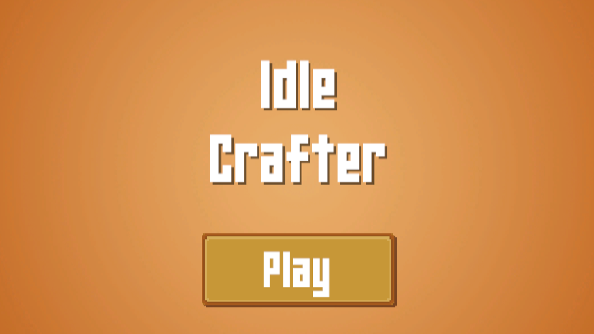

<- Back To Projects
Idle Crafter is a small game about collecting resources and crafting new things out of them!
Craft tools to collect resources faster and harvest different materials
Try to reach the diamond at the end! Can you figure out how to make it?